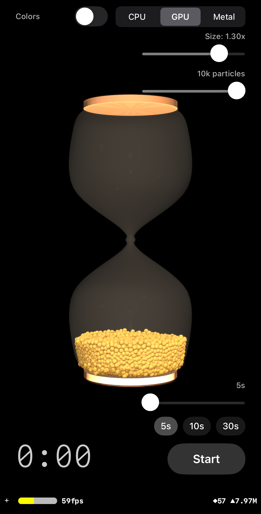

How a 3D hourglass with real granular physics was built entirely through conversation with Claude Code — no 3D modelling tools, no imported assets.

The finished app running on iPhone 16 Pro — built entirely through conversation
Building a procedural 3D hourglass from pure code — no 3D models, no imported assets.
Could we try building a photorealistic 3D hourglass egg timer app for iPhone? I’m thinking SceneKit for the 3D graphics. Ideally the hourglass would have smooth glass curves, visible sand that flows through the neck, and a digital timer overlay. Duration presets from 1 to 5 minutes. Let’s see if we can make it look stunning.
The entire hourglass shape is generated mathematically at runtime:
SCNGeometry built from SCNGeometrySource and
SCNGeometryElement — full control over every vertex and triangleAll hourglass geometry lives under a hourglassContainer node (so the
entire hourglass can be rotated for the flip animation), while camera and lights are
children of scene.rootNode (they stay fixed). A 5-point lighting rig with
deliberately low intensities keeps the scene warm without blowing out highlights.
UIViewRepresentable wrapping
SCNView instead of SwiftUI’s built-in SceneView.
The built-in view doesn’t expose SCNSceneRendererDelegate, which
is essential for per-frame physics updates at 120fps on ProMotion displays.
Finding the right transparency took several iterations — PBR was not the answer.
PBR (physically based rendering) was the obvious first choice for realistic glass, but environment reflections add brightness independent of the transparency setting, making the glass look like frosted white plastic. No combination of PBR parameters produced clear, barely-there glass.
The fix: Blinn lighting with very low diffuse alpha (0.10),
specular alpha (0.15), shininess 30, dualLayer transparency, and
writesToDepthBuffer = false. This gives a subtle glass look that lets
the particles inside show clearly.
opacity = 0), offset
inward by wallThickness (0.008). Exists solely for its
concavePolyhedron static physics body — the collider that
keeps particles inside the hourglasswritesToDepthBuffer = false is required on the outer glass
material, otherwise it occludes particles rendered behind it.
Geometric sand meshes looked artificial. CPU-based granular physics replaced them entirely.
Let’s go for it — how about a full particle simulation? Maybe start with a small number of larger particles, perhaps 100, but with a dial that allows ramping up. The narrowest point in the glass would need to be wide enough to allow at least one particle through. Could we use the best techniques available on iPhone 16 Pro?
The initial sand used geometric meshes — a bowl shape, body fill, and pile
cone that animated to simulate flowing sand. It worked visually but felt artificial.
SceneKit’s SCNParticleSystem was ruled out (no inter-particle
collision, no resting state). The entire geometric approach was deleted in favour of
a real physics engine.
r =
sqrt(x²+z²) and compare against
innerRadiusAt(y:) — the hourglass’s rotational symmetry
reduces 3D glass collision to a 2D radial problemSCNSphere
geometry and golden PBR material, with positions synced per frame in
renderer(updateAtTime:)The hourglass glass and frame caps are geometrically symmetric about Y=0. The flip exploits this:
hourglassContainer by π around X (1.2s, easeInEaseOut)
— particles tumble with real physics as gravity rotates with the containereulerAngles back to (0,0,0) — invisible because the
shape is identical after 180°(x,y,z) → (x,-y,-z),
(vy,vz) → (-vy,-vz)startFlip() triggers the rotation;
completeFlip() starts the timer after the animation finishesSCNAction completion handlers run on
the SceneKit thread, but completeFlip() updates @Published
properties on a @MainActor class. The fix:
Task { @MainActor in vm.completeFlip() }. Also,
presentation.eulerAngles.x (not .eulerAngles) must be used
to read the current in-flight angle — the model property shows the target, not
the interpolated value.
Auto-sizing the neck, controlling flow rate with friction instead of gravity, and hex-packed spawning.
Could we try making the narrowest point just big enough for one particle, so the others back up? The animation finishes far too quickly. I think we’re better off having natural gravity but really slowing the particles down through the constriction — maybe friction on the inner surface? Then they’d speed up again via gravity once they come out. Would you mind adding a duration slider from 10 seconds to 5 minutes too?
particleRadius +
wallThickness + 0.002 — barely fits one ball throughneckRadius × 1.8 create a sharp constriction that
forces single-file flow and natural particle backup/jammingSandGeometry.setNeckRadius() rebuilds both glass profiles when
particle count changes. The activeInnerProfile ensures
innerRadiusAt(y:) and the GPU profile lookup table both use the
updated shapeAn earlier attempt scaled gravity inversely with duration (effectiveGravity =
2.0 / duration), but this made the whole scene feel like slow motion. The
solution: constant gravity (1.0) with a friction zone at the neck.
neckDamping = duration × 0.02 — stronger at longer
durations|y| < 0.10 (neck half-height), ramping linearly
toward the centremax(0, 1 - neckFactor × neckDamping ×
subDt)Random spawn placement with rejection sampling was replaced by a hexagonal
close-packed lattice filling the lower chamber from bottom up. The shared
GranularSimulation.packedPositions() algorithm is used by all three
physics modes. This produces a near-resting-state configuration — no settling
loops needed, and no UI freezes from O(N²) overlap checking at init.
Moving the O(N²) collision engine to the GPU for 10–20× more particles.
Could we try adding a GPU-accelerated mode that I can switch to in the UI? It would be great to move the physics to Metal compute shaders.
One GPU thread per particle. Each thread applies gravity, updates position, resolves wall/floor/ceiling collisions, loops over all other particles for sphere-sphere collision, and applies damping. The full O(N²) algorithm, parallelised across thousands of threads.
innerRadiusAt(y:) sampled at 256 Y values, uploaded as an MTLBuffer.
GPU does O(1) interpolated lookup instead of O(80) linear searchstorageModeShared MTLBuffers: zero-copy CPU/GPU
access on iOS unified memory. CPU writes initial positions, GPU runs physics, CPU
reads back positions to update SCNNodesGPUParticle struct: float4
positionAndRadius + float4 velocityAndPad = 32 bytes, naturally
aligned for GPUparticleCount_CPU, particleCount_GPU) — switching
modes recalls the last-used countMetalPhysicsEngine init fails (e.g.
simulator without Metal)waitUntilCompleted per step — exactly
the same UI freeze that was fixed for CPU mode. The recurring lesson: never do
expensive work synchronously at init. Let particles settle in real-time via the
render loop.
Eliminating the CPU readback bottleneck through three iterations of trial and error.
Please could you try adding Metal instanced rendering as a third option? The CPU readback to update 10,000 SCNNodes seems to be the bottleneck now.
Custom Metal draw calls via SCNNodeRendererDelegate with
drawIndexedPrimitives(instanceCount:). After extensive implementation
— custom vertex/fragment shaders, lazy render pipeline, UV sphere mesh, Blinn
lighting matching SceneKit’s rig — the particles were completely invisible.
Custom draw calls produce no visible pixels in SceneKit’s modern multi-pass
rendering pipeline. Two files were written and then deleted.
Wrapped the physics MTLBuffer with SCNGeometrySource(buffer:) using
.point primitive type. Particles appeared, but point primitives lack
surface normals — PBR lighting produced black pixels. Switching to
.constant lighting (self-lit) made them visible as bright dots, but
above 10,000 they collapsed into a flat slab because points render as single pixels
with no depth or volume.
expandMeshes) expands each particle
into an octahedron mesh (6 vertices, 8 triangular faces) with proper normalsSCNGeometrySource(buffer:) wraps the expanded vertex buffer;
pre-computed static index buffer for the octahedron topologySCNGeometrySource(buffer:) → SceneKit renders.
The CPU never touches particle positionsSCNNodeRendererDelegate is effectively
broken for custom Metal draw calls in modern SceneKit. The reliable path to custom GPU
geometry is SCNGeometrySource(buffer:) with .triangles
elements — it feeds into SceneKit’s standard pipeline and gets all
rendering passes for free. Up to 50,000 particles with this approach.
Consistent volume fill, velocity-dependent damping, particle size control, and always-on collision.
The amount of volume filled with 250 CPU particles should look similar at higher counts — about 25% of the hourglass filled. Also, particles settle too slowly after reset — could we get them to reach steady state faster? And would it be worth adding a particle size slider, persisted per mode?
The base formula r ∝ N^(-1/3) keeps total sphere volume constant,
but at higher counts smaller particles leave more wall clearance, so each hex-packed
layer holds proportionally more particles and the pile appears shorter. A correction
factor (effR / refEffR)^(2/3) scales radius up at high counts to maintain
the same visual fill height as the 250-particle reference.
Getting particles to settle naturally proved much harder on the GPU than the CPU. The initial approach used uniform damping and a sleep system:
neckDamping = duration × 0.02,
applied where |y| < 0.10 — controls flow rate through the
constriction (all modes, retained in the final solution)pow(0.92, subDt)) at high speed and settle damping
(pow(0.05, subDt)) near rest, threshold 0.15. Applied uniformly
everywhere. Reduced jitter but did not eliminate it (all modes)velocityAndPad.w stores a per-particle sleep counter. When speed
stays below a threshold for consecutive frames, the particle “sleeps”
— reducing physics work. This helped but introduced a new problem: after a
flip, the sleeping pile in the upper chamber refused to drain through the neck.
The uniform sleep threshold and settle damping were killing gravitational acceleration
in the upper chamberThese mechanisms reduced shimmer but caused jamming after flip. The full story of diagnosing and solving this is covered in Step 9.
radiusForCount(). Per-mode
persistence via UserDefaults. Neck auto-adjusts to the final radiusskipCollision optimisation disabled sphere-sphere collision above
10,000 particles. Without collision, particles passed through each other and
collapsed into a flat slab. Removing it entirely and lowering max counts (CPU 250,
GPU 10,000, Metal 50,000) keeps physics correct at all countsNearly-spherical Metal particles, always-enabled controls, and final UX refinements.
The Metal mode particles look too angular compared to the CPU/GPU spheres — could we try a better mesh? Also, I’d love it if the mode picker, size, and count controls were always enabled — maybe changes during animation could trigger an instant restart for mode, deferred to next start for sliders? And please could you cap duration at 1 minute.
The 6-vertex octahedron was replaced with a 42-vertex subdivided
icosahedron (80 triangular faces). Each vertex lies on the unit sphere, so
vertex normals = vertex positions — producing nearly-spherical shading that
closely matches the SCNSphere used in CPU/GPU modes. The
expandMeshes kernel was updated to generate 42 vertices per particle
(with a static 240-index buffer per particle for the 80 faces).
SCNSphere, Metal uses a 42-vertex
approximation that looks identical at the particle sizes involved.
Why GPU/Metal particles never settled, dozens of failed fixes, a diagnostic breakthrough, and the chamber-asymmetric solution.
I’m seeing an issue where GPU/Metal particles never fully settle. After reset, the pile in the lower chamber shimmers and flickers indefinitely — particles oscillating at speed ~0.05, never reaching rest. Worse, after a flip, the pile in the upper chamber refuses to drain through the neck — particles jammed in place and nothing flows. CPU mode works perfectly. The same physics constants, the same collision algorithm, but fundamentally different behaviour. Any ideas?
The GPU’s double-buffered collision is the source of both problems:
pow(0.05, subDt)) and velocity cutoff (snap to zero
below 0.01) everywhere. Settled the lower chamber but killed upper-chamber drainage
— particles that should have been falling through the neck were having their
tiny gravity-accumulated velocities zeroed out every frameEach approach fixed one symptom while breaking something else. The fundamental tension: the lower chamber needs aggressive settling to fight parallel-collision shimmer, but the upper chamber needs gentle physics to let gravity dominate and drain the pile. No single set of parameters could serve both.
-test launch argumentAfter dozens of iterations tweaking parameters by eye and squinting at screenshots,
the key breakthrough was adding diagnostic infrastructure. A
-test launch argument in the Xcode scheme triggers:
test_results.txt in the app’s documents directoryThe first test dump immediately revealed the problem. Every single upper-chamber particle had exactly zero velocity. The combination of collision impulse + settle damping + velocity cutoff was killing every bit of gravitational acceleration before particles could move. The pile was not “jammed by friction” — it was frozen by the settling system that was supposed to help. What looked like a physics problem was actually a damping problem, and no amount of screenshot-squinting could have revealed the mechanism.
The insight from the test data led directly to the solution: treat the two
chambers as fundamentally different physics regimes. The Metal shader branches
on pos.y:
pow(0.92, subDt))
and settle (pow(0.05, subDt)) based on speedpow(0.92, subDt) uniformly — no
settle damping blendThe -test infrastructure proved its value immediately. After implementing
chamber-asymmetric physics:
snapAfterFlip resets all sleep counters to 0, ensuring every particle
starts fully awake after a flip regardless of prior state-test launch argument took 20 minutes to add and saved hours
of guesswork. The final solution (chamber-asymmetric physics) is conceptually simple:
the lower chamber needs to fight parallel-collision artefacts with aggressive damping,
while the upper chamber needs gravity to win, so skip the impulse entirely. CPU mode
doesn’t need any of this because sequential resolution converges naturally.
Adding a -test launch argument that dumps particle state to disk — the single most impactful debugging tool in the project.
Could we try adding a -test launch argument that auto-starts a
10-second timer and dumps every particle’s position and velocity to a text file
when the timer completes? It would be really helpful to see exactly what the physics
engine is doing, rather than just squinting at the screen.
-test launch argument: detected via
CommandLine.arguments.contains("-test"). Triggers auto-start with a
10-second duration after a 2-second settling delayDocuments/test_results.txtThe first test dump revealed the root cause of the GPU settling problem instantly. Every single upper-chamber particle had exactly zero velocity. The combination of collision impulse + settle damping + velocity cutoff was killing all gravitational acceleration before particles could move. What had looked like a physics or friction problem was actually a damping problem — and no amount of visual inspection could have revealed the mechanism. One text file with per-particle velocities made the invisible visible.
-test infrastructure
took 20 minutes to add and immediately pointed to the solution. It transformed GPU physics
debugging from guesswork into engineering.
The breakthrough fix — treating upper and lower chambers as fundamentally different physics regimes.
The test dump shows all upper-chamber velocities are zero — it looks like the settle damping and velocity cutoff are killing gravity before particles can move. Could we try different physics rules for each chamber? Maybe aggressive settling below y=0 but gentle flow above y=0?
Parallel GPU collision (double-buffered, each thread reads stale snapshots) creates two distinct problems that require opposite solutions:
No single set of parameters could serve both regimes. The Metal shader now branches on
pos.y:
pow(0.05, subDt) blend), velocity cutoff (snap to zero below 0.01), and
sleep system (light sleep at 16 frames, deep sleep at 30)pow(0.92, subDt)), no velocity cutoff, no sleep. Sleep counter forced
to 0 so particles stay fully awake to drainVelocity impulse exists to stop overlapping particles from moving toward each other. In a packed pile under gravity, every particle gets gravity pulling down and impulse pushing up. On the GPU, impulses from stale snapshots over-compensate — they cancel gravity entirely. Removing impulse in the upper chamber means gravity is the only net force. Position correction alone prevents particles from overlapping, but doesn’t fight their downward motion. The pile drains freely.
Re-running the -test dump after the fix: 5,000 particles, 10-second
timer → 100% drained, all particles in lower chamber, all deep sleeping,
average speed 0.000000. No shimmer, no flicker, no jammed piles.
snapAfterFlip resets all sleep counters to 0, ensuring every particle starts
fully awake regardless of prior state.
Duration persistence, control layout refinements, and removing the SceneKit startup fade.
Could we persist the duration in UserDefaults (default 10 seconds)? Also, would you mind moving the controls up a bit to reduce overlap with the bottom edge? And if possible, let’s try getting rid of the SceneKit fade-in — ideally the scene would appear instantly.
A toggle that gives each particle a unique random HSB color — implemented differently for each rendering mode.
How about adding a toggle for random per-particle colors? Each ball could get a random color from the full HSB spectrum. Would it be possible to make it work across all three physics modes?
In CPU and GPU modes, each particle is an SCNNode with a shared
SCNSphere geometry. To give each particle a unique color, the shared geometry
is replaced with per-node copies of SCNSphere, each assigned
a unique PBR material with a random HSB diffuse color. This uses more memory than the
shared-geometry approach but is straightforward — SceneKit handles per-material
rendering natively.
Metal mode has no SCNNode per particle — all particles are a single
mesh generated by the expandMeshes compute kernel. Adding per-particle
colors required changes at every level:
MeshVertex struct expanded to 28 bytes: the previous
layout stored position (12 bytes) + normal (12 bytes) = 24 bytes. A
packed_float3 color field was added, bringing the total to
packed_float3 position + packed_float3 normal + packed_float3 color
(36 bytes, or 28 with tighter packing depending on alignment)packed_float3 RGB color per particle. The expandMeshes
kernel reads from this buffer and copies the particle’s color to every vertex
of its meshSCNGeometrySource with .color semantic:
a third geometry source wraps the color data from the expanded mesh buffer, telling
SceneKit to use per-vertex colors for renderingSCNSphere copies with unique materials). Metal bypasses
SceneKit’s material system entirely by baking color into the vertex data via a
compute kernel and a .color geometry source. The toggle applies instantly
on the next particle setup — no restart required.
Adding ShiftingSandsTests with CPU and GPU physics test suites — 12 tests covering the core simulation.
Let’s get data access and tests in early! Could we add a test target with tests for both the CPU and GPU physics engines? It would be great to cover the fundamentals: gravity, floor containment, sphere collision, flip transform, full drain, settling, and wall containment.
(x,y,z) → (x,-y,-z) and velocity
inversion are correctsnapAfterFlip Metal kernel correctnessimport Testing,
@Test, #expect())MTLCreateSystemDefaultDevice() and skip gracefully on simulators
without Metal supportGranularSimulation and
MetalPhysicsEngine code paths used by the app — no mocks or
simplified physics-test launch argument
from Step 10, the project now has two layers of verification: automated unit tests for
correctness, and the diagnostic dump for real-device behaviour analysis. Both were added
late in the project — the lesson is to add them from the start.
Refined particle lighting, moved controls for better layout, and fixed button behavior after timer completion.
The underside of particles is blown out white in GPU and Metal mode — could we try a different lighting approach? Also, would you mind moving the colour selector to top-left? The hourglass should ideally show immediately. The Start/Reset button after timer completes needs a look too. And could we improve GPU color mode performance?
.physicallyBased to
.lambert — eliminates specular highlights and Fresnel reflections
that caused white blowout on particle undersidesUIColor(white: 0.78) diffuse (slightly
below white) to match perceived brightness of CPU/GPU SCNSphere nodesSCNSphere copies (N draw
calls!) — replaced with a 24-color palette of shared geometries.padding(.top, 8) (was 60) to minimize
hourglass overlapscnView.prepare(scene, shouldAbortBlock:) for synchronous
shader compilation — eliminates fade-in-multicolor launch argumentData-driven debugging round 2 — CLI diagnostic args reveal mid-air freezing, missing respawn, and neck-region overflow placement.
I’m seeing a couple of issues in GPU mode after the timer runs: (1) particles seem to be getting stuck mid-air with no physical support beneath them, and (2) reset sometimes fills the entire chamber with particles jammed in the middle. Both are intermittent and hard to reproduce visually — could we investigate?
Extended the existing -test infrastructure with new CLI diagnostic arguments
to reproduce and diagnose without guesswork:
-mode [CPU|GPU|Metal] — force a specific physics mode-count N — force a specific particle count-size N — force a specific size multiplier-dumpspawn — dump spawn position histogram on startup, showing
particle distribution by Y-height region (upper chamber, neck, lower chamber)Running in the simulator with -mode GPU -count 10000 -size 1.3 -dumpspawn
immediately produced actionable data.
The GPU sleep system (from Step 9) used a velocity cutoff: particles below a speed threshold had their velocity snapped to zero and their sleep counter incremented. The problem was that the cutoff only checked velocity, not whether the particle had any physical support beneath it. A particle could be in mid-air, momentarily slow (e.g. after a collision impulse cancelled its downward velocity), get frozen by the cutoff, and stay stuck with zero velocity forever — gravity increments zeroed out every frame by the same cutoff.
The fix: added a contactCount tracker in the collision loop.
Only particles that are actively touching at least one other particle (or the floor) can
enter the sleep/freeze state. Unsupported mid-air particles always stay fully awake,
allowing gravity to pull them down.
After the timer ran to natural completion, particles were not respawned. The next tap of “Start” would flip whatever was left from the previous run — often a disorganised mess with particles scattered throughout both chambers. If particles had drifted or settled unevenly, the flip would start from a bad initial state.
The fix: respawn particles on manual Reset only. Natural timer completion leaves particles at rest where they settled — no visual jump. Flip start only rebuilds if count/size/color settings changed. This gives clean transitions between runs without jarring respawn flashes.
The hex-packed spawning algorithm (packedPositions()) has a capacity limit
per layer. When more particles are requested than fit in the lower chamber’s hex grid,
overflow particles need to go somewhere. The original code placed them near y = 0
— the neck region. These particles would immediately jam in the constriction on the
next flip, blocking flow.
The -dumpspawn histogram made this obvious: with 10,000 particles at size
1.3×, the dump showed a cluster of particles near y = 0. After the fix
— placing overflow particles in the lower chamber bulge (the widest part, well below
the neck) — the dump showed 0 upper-chamber particles, 0 near-neck
particles.
y = 0 (the neck) within seconds of running the command —
confirming the overflow placement bug. The contactCount fix for mid-air
freezing was equally invisible to the eye: a particle hovering motionless looks identical
to a properly resting particle unless you know its support state. The CLI diagnostic
arguments (-mode, -count, -size,
-dumpspawn) are lightweight to add and transform reproduction from
“sometimes happens if you try enough times” into “deterministic on
first run.”
Three interconnected sleep bugs discovered and fixed in sequence — mid-air suspension, FPS collapse, and glass blur.
I’m noticing a few things in GPU mode with 10,000 particles at size 1.3: some particles seem to be left hanging just above the settled pile. Also, FPS is dropping from 60 to ~14 near the end of the animation, and particles appear blurry through the front of the glass during settling. Could we take a look?
When a particle entered deep sleep (counter >30), it stayed frozen forever — even if the particles supporting it had since moved away. A particle sitting on top of another could remain suspended in mid-air after the lower particle drained through the neck. The deep sleep early-return wrote the same position every frame without checking whether support still existed.
The fix: support verification in deep sleep. Before staying asleep,
check if the particle still has support: floor contact counts as support (cheap Y check),
otherwise scan nearby particles within 1.05× touching distance. If no support found,
reset the sleep counter to 0 and let the particle fall. Added a unit test:
sleepingParticleWakesWhenSupportRemoved.
The support verification scan ran for every deep-sleeping particle every frame. At 10,000 particles with most in deep sleep, this added ~80 million distance checks per frame. The GPU couldn’t sustain 60fps.
The fix: staggered support checks. Each particle only verifies support
every 30 frames, offset by its thread ID (sleepCounter % 30 == tid % 30).
Only ~N/30 particles check per frame, reducing overhead by 30×. A particle whose
support disappears wakes within ~0.5 seconds (30 frames at 60fps) — fast enough to
be visually imperceptible.
Light sleep (counter 16–30) tracked sleepContactCount and woke
particles when they lost contacts. The problem: particles barely separated from neighbors
(distance slightly exceeding the touching threshold) had zero contacts, woke every ~15
frames, made a micro-movement, and re-entered sleep. This oscillation at ~4Hz created
visible blur through the transparent glass. SceneKit’s temporal jittering (AA)
amplified the effect by blending successive frames.
The fix: removed sleepContactCount from light sleep entirely.
Light sleep now wakes only if a non-sleeping neighbor is approaching fast
(relVelNormal < -0.05). Support-loss detection is deferred to the deep
sleep staggered check, which runs less frequently and doesn’t cause oscillation.
Also disabled isJitteringEnabled — MSAA 4X provides sufficient AA
without temporal artifacts.
Camera depth of field, spawn height limits, and a flatness test for the initial particle pile.
Particles are bouncing around at the bottom and it looks like motion blur — could we try f/11 for deeper focus? Also, the start and reset operation still starts with some particles very near the neck of the hourglass — ideally at max they’d be no more than half way up the bottom half. And if possible, the top layer should be flat rather than blocky.
motionBlurIntensity = 0: explicitly disabled to prevent
any per-frame motion blur from compounding with the settling micro-movementsisJitteringEnabled = false eliminates
SceneKit’s temporal anti-aliasing, which was smearing micro-movements through the
transparent glass. MSAA 4X provides clean anti-aliasing without temporal artifactsThe hex-packed spawning had three iterations:
maxY = -0.05): particles spawned too close
to the neck, getting stuck on resetmaxY = -0.24): too restrictive — at
high particle counts, the hex lattice couldn’t fit all particles below -0.24.
Overflow particles were placed randomly, creating an uneven “weird block” in
the middlemaxY = -0.10): the hex lattice fills from
the bottom and stops early when it has enough particles. At low counts it naturally
stays well below -0.24. At high counts with large sizes, it extends up to -0.10 (still
well below the neck at y=0). Overflow random placement rarely triggersAdded spawnTopLayerIsFlat() to the CPU test suite. The test spawns particles
at four configurations (5k/10k at 1.0/1.3 size), sorts by Y, and verifies the spread of
the top 5% of particles is within 3 particle diameters. This catches the blocky spawn
pattern that occurred with the too-restrictive -0.24 cap. 16 tests total (10 CPU, 6 GPU).